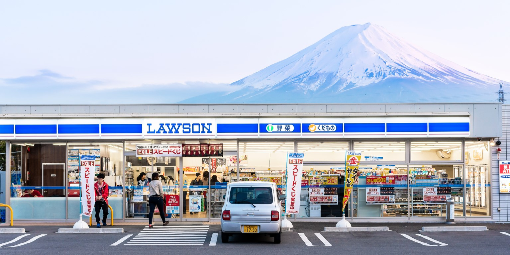

Que comer en Tokio
Introduccion
Dónde Comer en Tokio
¿Vas de vacaciones a Japón y te preguntas qué y dónde comer en Tokio? Pues deberías saber que esta ciudad, posiblemente sea la que más oferta gastronómica tiene del mundo.
Si es por el precio, no te preocupes. Puedes comer en Tokio muy barato y bien. Por sólo 7 u 8 euros puedes llenarte la barriga y quedar contento. Teniendo en cuenta el alto nivel adquisitivo de Japón, comer a este precio no está nada mal.
Tokio es la ciudad con más estrellas Michelin del mundo. Los japoneses tienen un grado de exigencia muy alto y eso se nota en el nivel de sus restaurantes.
En definitiva, podemos decir que en Tokio hay un restaurante para cada bolsillo, algo que se agradece, ya que viajar a Japón no es lo que se dice precisamente barato.
Comer en Tokio
Si la pregunta es ¿Dónde comer en Tokio?, la respuesta es con otra pregunta… ¿de qué forma?. En Japón hay muchas formas y sitios donde comer muy diferentes. Resumiendo, encontrarás los siguientes:
Tiendas de obento
Un Obento (弁当 o べんとう) es una caja o fiambrera de comida preparada para llevar, muy frecuente de encontrar en las tiendas de alimentación de Japón. Habitualmente, suelen contener porciones de pescado o carne, arroz, y diferentes tipos de guarnición.
Restaurantes de comida rápida japonesa
En Tokio puedes encontrar hay muchas cadenas de comida rápida pero de estilo japonés. En vez de vender las típicas pizzas o hamburguesas a las que estamos acostumbrados, ellos venden ramen, yakisoba, katsudon, gyudon, yakitori, o tendon entre muchas otras especialidades. Es una forma de comer en Tokio muy económica.
Puestos de comida japonesa callejera
Comer en Tokio en puestos de comida callejera, es una buena opción para encontrar y comer comida tradicional a buen precio. Suelen vender de todo tipo de platos tradicionales. Entre los más frecuentes, encontrarás los típicos Yakisoba, Takoyaki, okonomiyaki, karaage o Yakitori.
Restaurantes especializados en platos japoneses
A los japoneses les encanta comer. Pero comer bien y calidad. Además, siempre están hablando de comida. Puedes pensar que esto siempre es así en todos los países, pero los japoneses veneran la comida y suelen convertirla en el centro de las conversaciones.
Cafeterías y Restaurantes temáticos
Tokio es la ciudad con mayor número de restaurantes o cafeterías temáticas del mundo. La lista es larguísima y en muchas ocasiones, muy extravagante.
Konbini
Los konbini (コンビニ), son tiendas donde se vende todo tipo de productos básicos. Suelen estar abiertos 24 horas, algo que siempre viene bien por si hay alguna necesidad de última hora. Habitualmente tienen una zona donde venden todo tipo de platos japoneses. También suele tener un pequeño espacio donde podrás sentarte a comer algo tranquilamente.
Famiresu, restaurantes familiares
Los restaurantes familiares (famiresu), normalmente están ubicados en los centros comerciales y pueden ser de comida tradicional japonesa o también extranjera. Pero lo que tienen en común, es que están orientados a las familias con niños. Ofrecen menús familiares y los precios son más económicos.
Recomendación de restaurantes
DEN
"La alta calidad del Chef Zaiyu Hasegawa de su esposa y de todo su equipo te hacen sentir en el paraíso, es sin duda alguna de los mejores restaurantes del mundo"
Precio: €€€
Valoración: 4,4
ubicación: Japón, 〒150-0001 Tokyo, Shibuya City, Jingumae, 2 Chome−3−18 建築家会館ＪＩＡ館
Web: Photoshop, Illustrator & Sketch
GYOPAO Gyoza Roppongi
"¡Súper deliciosa comida japonesa auténtica dirigida por chicos realmente geniales!"
Precio: €
Valoración: 4,7
Horario: 18:00 - 23:45
Ubicación: 4 Chome-9-8 Roppongi, Minato City, Tokyo 106-0032, Japón
Gyukatsu Motomura Harajuku
"La mejor experiencia gastronómica que tuve en Tokio hasta ahora"
Precio: €€
Valoración: 4,8
Horario: 11:00 - 22:00
ubicación: Japón, 〒150-0001 Tokyo, Shibuya City, Jingumae, 3 Chome−23−2 地下１階 エヌエスビル
Ise Sueyoshi
"Nunca abandono Japón sin comer en este restaurante, secillamente es perfecto."
Precio: €€€
Valoración: 4,8
Horario: 17:00 - 22:00
Ubicación: Japón, 〒106-0031 Tokyo, Minato City, Nishiazabu, 4 Chome−2−15 水野ビル
Platos típicos
En esta sección, te invitamos a descubrir una amplia variedad de sabores y experiencias culinarias que hacen de Tokio un destino imprescindible para los amantes de la comida. Desde puestos callejeros hasta restaurantes de renombre internacional, encontrarás una fascinante mezcla de platos auténticos y creativos que deleitarán tus sentidos. Exploraremos los distintos estilos de cocina que se encuentran en Tokio, desde el sushi y el ramen hasta los yakitori y las gyozas, entre otros.
Dango
Disfrutarás de un sabor dulce mezclado con salado único. Tienen una textura chiclosa. Otro gran punto a favor es que son muy baratas, por lo que sin darte cuenta estarás comprando varias de estas brochetas de lo buenas que están.

Tamagoyaki
Es uno de los platos tradicionales de Tokio que consiste en una tortilla japonesa que se sirve pinchada sobre una pequeña varilla. Es una tortilla dulce, esponjosa y sumamente deliciosa que tiene un exterior tostado.
Sushi
Está claro que si hablamos de los platos típicos en Tokyo no puede faltar el sushi, ya que es la comida típica de Japón más conocida en todo el mundo. Existen muchos tipos de sushi que debes conocer.
Carne de Kobe
Cuando estés disfrutando de la gastronomía de Tokio y probando todo lo que se te antoje, la carne de Kobe se convertirá en uno de tus platillos favoritos. En cuanto la pruebes te darás cuenta de que no has probado una carne igual.
Takoyaki
Está claro que si hablamos de los platos típicos en Tokyo no puede faltar el sushi, ya que es la comida típica de Japón más conocida en todo el mundo. Existen muchos tipos de sushi que debes conocer.
Yakitori
Entre los puestos de comida callejera japonesa, también tenemos que destacar los yakitori o kushiyaki, unas brochetas de pollo con verduras con aspecto delicioso.
Ramen
El ramen es un plato tradicional japonés que se sirve en muchos restaurantes en Japón. Consiste en una sopa de fideos caliente con caldo de carne, huevo y diferentes guarniciones.
Gyozas
En esta lista sobre platos japoneses no podemos no mencionar las gyozas, unas deliciosas empanadillas o dumplings rellenos de carne picada, verduras o mariscos.

Dorayaki
El dorayaki es un pastelito dulce con forma de sándwich relleno de pasta de judías rojas.